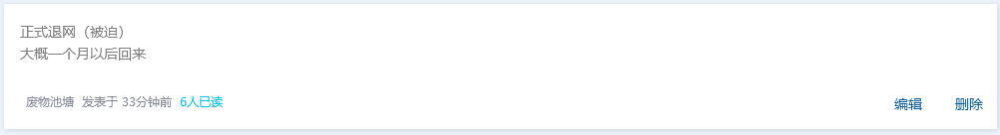
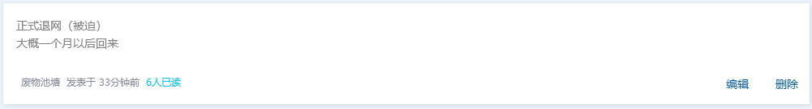

因为网线被断开（从 根 源 解 决 问 题）以及手机被收，我们无法从网上联系到他。
虽说可能要等到开学，但他本人却说一个月左右。因为手机已经被收走，我们无法得到答复 :(
现在我们只能等待，期待池塘君早日回归。
以下是池塘在粉丝群临走前留下的消息：


池塘君（博客）在2020年8月25日21点左右因为开学以及家长nt，而被迫退网。
因为网线被断开（从 根 源 解 决 问 题）以及手机被收，我们无法从网上联系到他。
虽说可能要等到开学，但他本人却说一个月左右。因为手机已经被收走，我们无法得到答复 :(
现在我们只能等待，期待池塘君早日回归。
以下是池塘在粉丝群临走前留下的消息：
